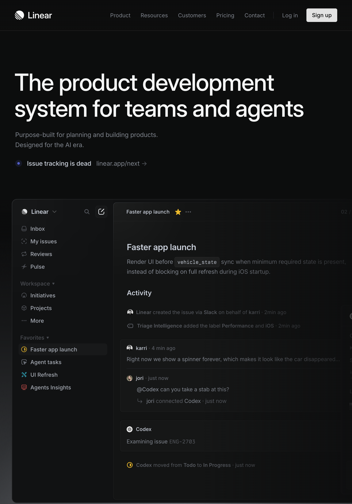
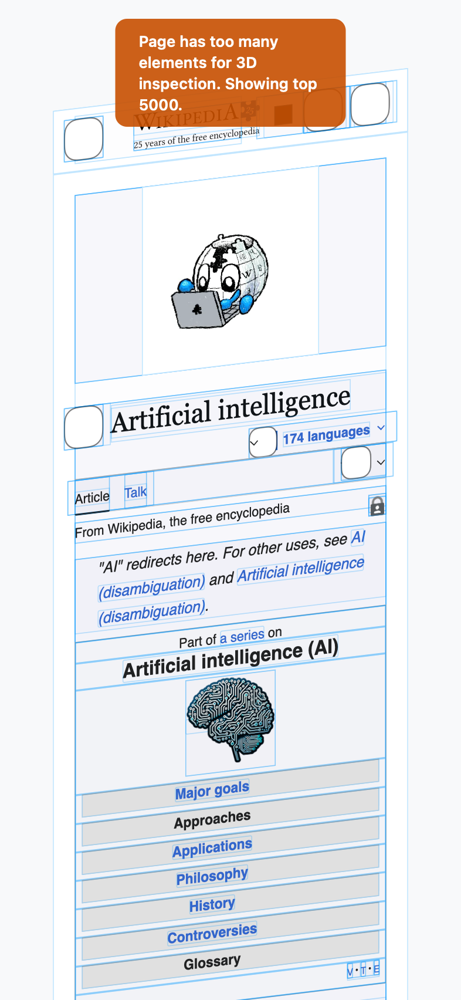

Real mobile.
Real browsers.
Real AI control.
Kelpie is an LLM-first browser for macOS, iOS, Android, and Linux. Language models discover and orchestrate real devices on the local network — no emulators, no persistent scripts, no desktop required.

One browser. Zero compromises.
WebKit
Test exactly how Safari renders — same engine, same quirks, same performance characteristics. Ideal for validating iOS-equivalent rendering behaviour without leaving your desk. Every WebKit-specific CSS feature, font rendering decision, and scroll behaviour is faithfully reproduced.
Chromium
The complete Chrome DevTools Protocol surface — request interception, performance timelines, JS coverage, cross-origin iframe access. Kelpie embeds a real Chromium engine via CEF, not a headless binary. Switch renderers on the fly; cookies migrate automatically.
kelpie_set_renderer engine=chromium · Cookies migrate automatically. No reload required.
Kelpie actually looks like.




Native WebView APIs — no bridge overhead
Playwright controls browsers through CDP over a WebSocket. Kelpie calls iOS WebKit and Android WebView APIs directly in-process. No external process, no protocol hop, no serialisation round-trip.
Real hardware, real rendering
Running on an actual iPhone or Android phone means real GPU rendering, real network stack, real iOS fonts and scroll physics. Playwright on desktop cannot replicate mobile platform behaviour.
Everything you can tap — controllable by MCP
Click, swipe, type, scroll, fill forms, take screenshots, read the DOM, intercept network, observe mutations — every interaction a human user can perform is exposed as a first-class MCP tool. If you can tap it, an LLM can too.
Save credits. Stay private.
Install a small local model directly in the browser. Kelpie ships five AI endpoints — load, unload, infer, status, and audio recording — available on macOS, iOS, and Android via the same HTTP and MCP interface.
Extract and evaluate page content without touching a cloud API. Use a local model to parse a page, classify elements, or summarise content — all inference stays on the device. Perfect for high-volume scraping or privacy-sensitive content.
Switch seamlessly between local and remote. Use the local model for cheap extraction tasks, then hand off to a larger cloud model only when reasoning quality matters. Mix strategies per task, per device, via a single API.
macOS uses native GGUF models or Ollama. iOS and Android default to platform AI frameworks (Core ML / NNAPI) on supported hardware, with optional remote Ollama fallback.
ai-status, ai-load, ai-unload, ai-infer, ai-record — are available via HTTP and MCP on every platform.
to command the mobile web.
mDNS Auto-Discovery
Browsers advertise _kelpie._tcp on the local network. The CLI finds every device — no IPs, no manual config, no pairing.
Group Commands
Navigate, click, and fill forms across an entire fleet simultaneously. One instruction, every device, in parallel — with per-device result aggregation.
Native MCP
Full Model Context Protocol in both the browser and CLI. Any MCP client connects directly — no translation layer, no proxy overhead.
Native Capture
Screenshots, DOM trees, console logs, network timelines — all via platform WebView APIs and CDP. No content scripts, no CSP conflicts.
Smart Queries
findButton("Submit") returns only the devices where it exists. Let the model decide what to do with the ones that don't.
Resolution-Aware
Commands like scroll2 adapt per device viewport. One instruction works correctly across every screen size in a heterogeneous fleet.
Separate, complementary, open.

Silkie
A self-hosted management layer for a WireGuard overlay network. Device enrollment, session brokering, STUN/TURN NAT traversal, and a clean admin UI — your private network, your infrastructure, no cloud required.
- Device enrollment for macOS, Linux, iOS & Android
- ICE/STUN/TURN-assisted NAT traversal
- Short-lived session tokens, zero long-lived secrets
- OIDC-based auth with SSO support

Nessie
A voice-first personal AI agent that lives on your Mac. Talk to it, it talks back. Spawn sub-agents for deep research. Inject text into any active application. Ambient, always-on, always ready.
- Real-time voice I/O via OpenAI Realtime API
- Native keyboard injection into any macOS app
- Parallel sub-agents for research and file work
- Persistent memory across sessions
Start automating
mobile browsers today.
Install the CLI, launch Kelpie on a device, start issuing commands.